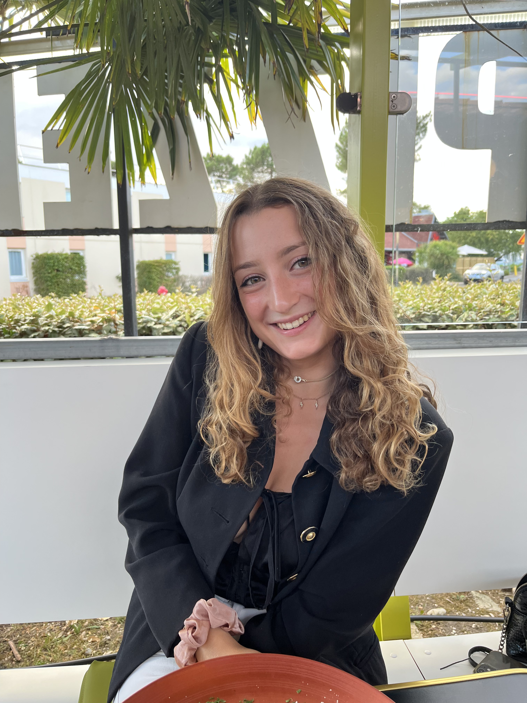
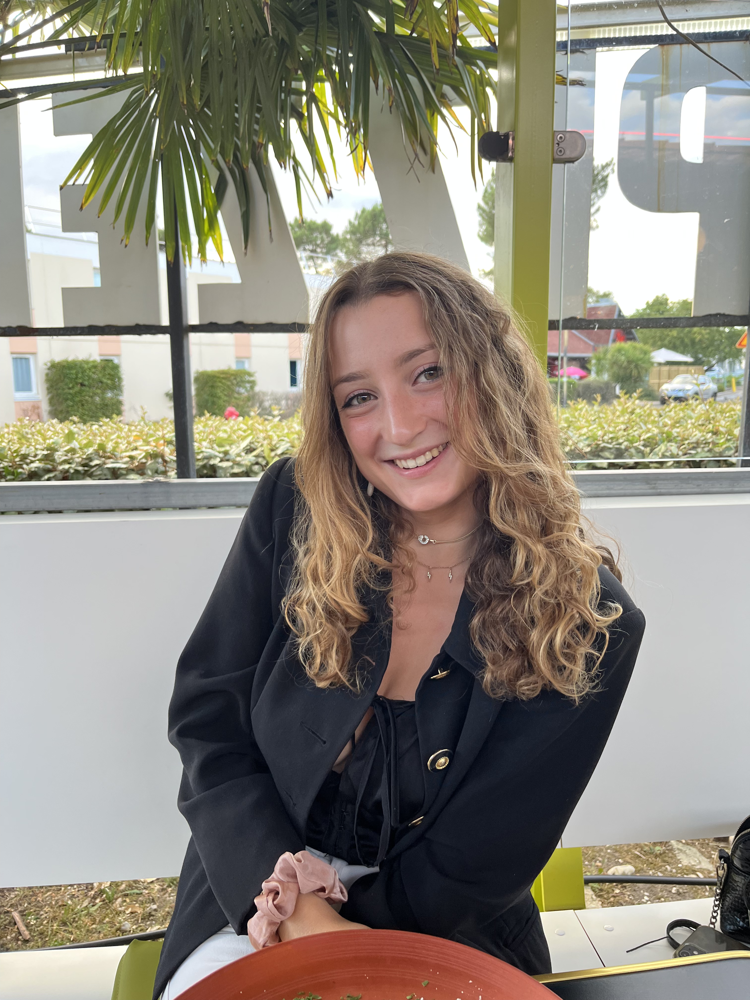
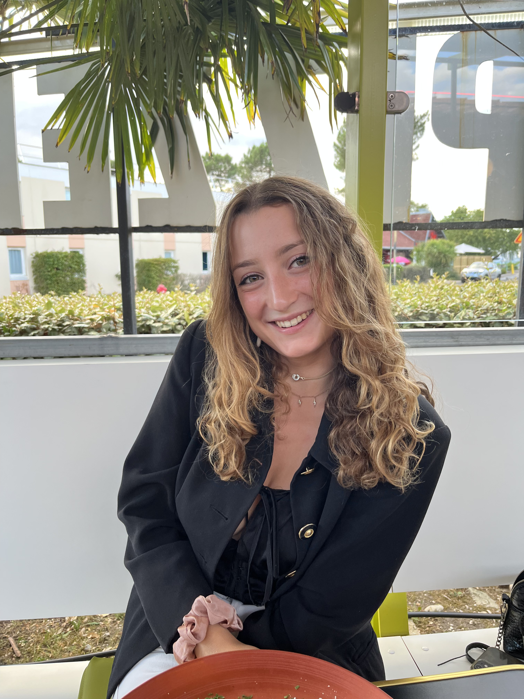
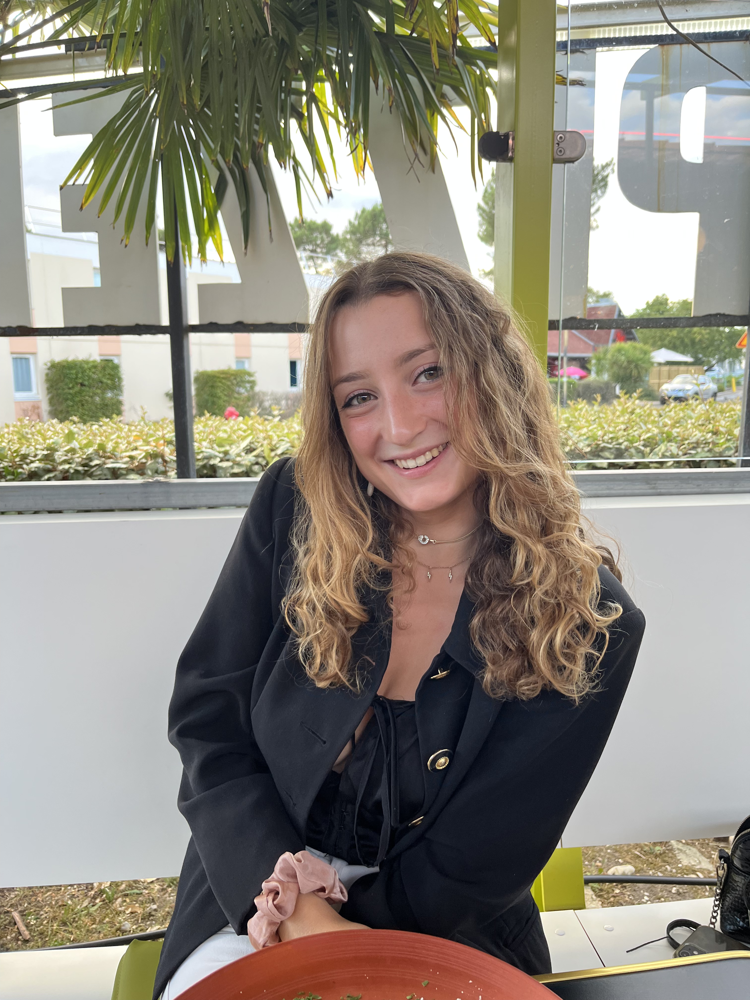

 

"J'ai toujours adoré les soins de la peau. Les cosmétiques ont toujours été ma passion. Je crée mes propres produits de beauté pour moi-même. C'est cette passion qui m'a poussée à vouloir travailler en tant que développeuse de produits bio. Cette année, je rejoins l'aventure Mimitika pour développer des produits solaires naturels !"
Je fait du sport. Je fais de la natation et de la musculation pour me renforcer et mieux atteindre mes objectifs. La natation c'est un sport que j'adore ! J'en fais depuis petite. J'aime me dépasser et j'adore les défis d'équipes comme les relais. Je m'occupe aussi d'enfants plusieurs fois par semaine. L'été je fait des colonies de vacances et le reste de l'année je garde des enfants de 18 mois à 13 ans via une agence. J'adore trouver des idées créatives et ludiques pour eux !
J'organise des Clean Walk. Ce sont des ramassages de déchets dans Bordeaux. J'aime le contact avec les gens, discuter avec eux, échanger sur leur vie, les sensibiliser à l'environnement. Beaucoup changent leurs habitudes de consommation après cette expérience et me font des retours, c'est très motivant!